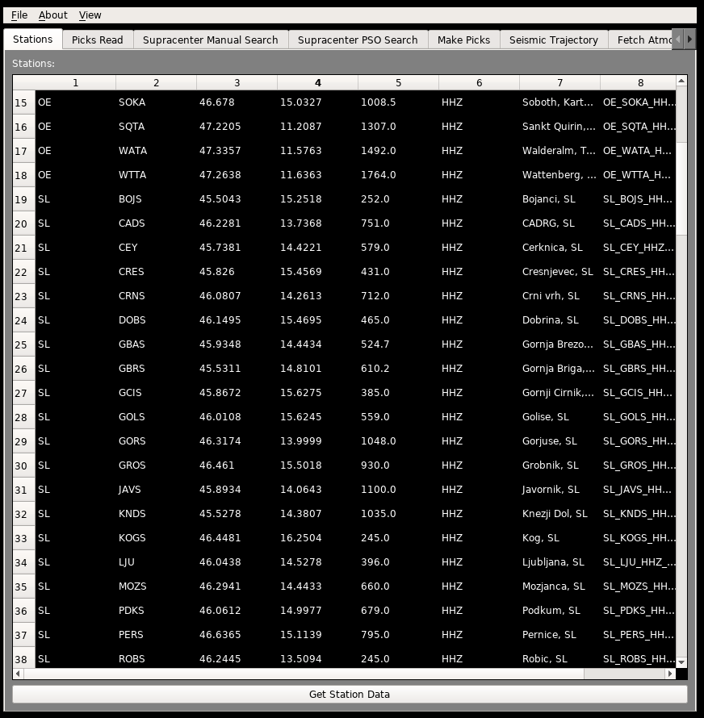

Stations¶
A table which displays all of the stations currently being used in the simulation. Editing this table has no affect on any of the data.
This tab has one button, when clicked:
If Get Data == True:¶
The program will search both IRIS and ORFEUS for stations within the Degrees in Search Radius variable range from the Latitude and Longitude Center. The data will be from the Fireball Datetime to about an hour after, with a few minutes before and after for padding. Channels included in this search are BDF, HHZ, BHZ, EHZ, SHZ. The .mseed files will be downloaded into the working directory automatically, and can be used by the program without any user interaction. All stations listed in this table will be used in the simulation.
This table will also include any manually added stations from the “Misc” tab in the variables tab.
Note
Once the stations have all been succesfully downloaded, it is recommended to turn Get Data to False, since otherwise, the stations will be redownloaded again. If the search radius needs to be increased, then Get Data should be turned back on to get the extra stations.
If Get Data == False:¶
The program will display all of the currently usable stations located in your working directory.